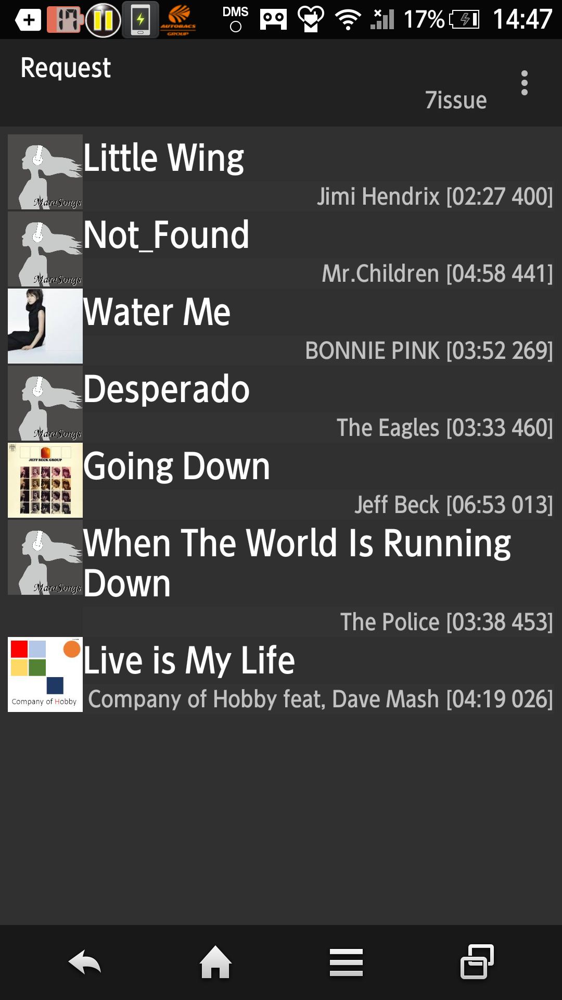

Music to reproduce next if reproducing music is over, the music that want to regenerate it next…"MaraSongs" make music to squeeze in through ...... the play list at that time, and to reproduce a playlist as "request".
Functional Description
For example, the person who rode at the time of drive makes music, "the next wants to listen to this" a transient playlist.
This list removes the music that reproduced sequentially and comes back to the next music that I regenerated with an original playlist if I revitalize all requests exhaustively.
It is a transient crossed temporary making list, but I change the name and can leave a reproduction result because a history is left for "these days reproduction".
I display the artist choice on the all songs list to request the next when I tap a title part from a player screen and list it and display it.
When you confirm a request, please choose "a request" with a list choice screen.

Way to use
Because you are assuming the choice from a list of all songs, at first, please make a list of all songs.
This menu is displayed in a list of titles.
When long shot taps a title, a right dialogue is displayed.
I stop the music that is reproducing if I check "immediate reproduction" and execute a request.
I execute a request after the music that is reproducing if I do not check it was over.